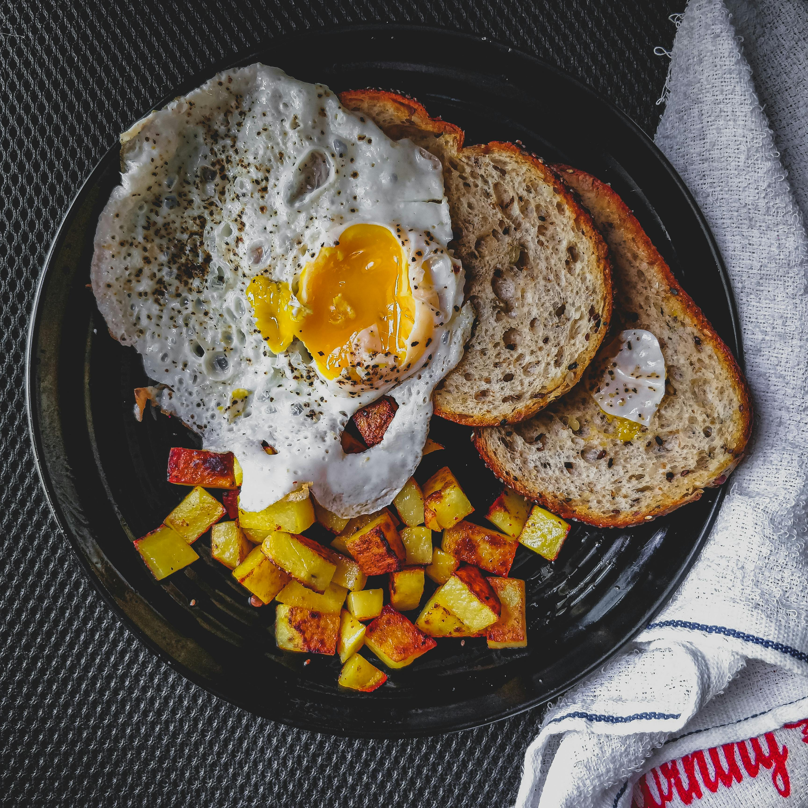
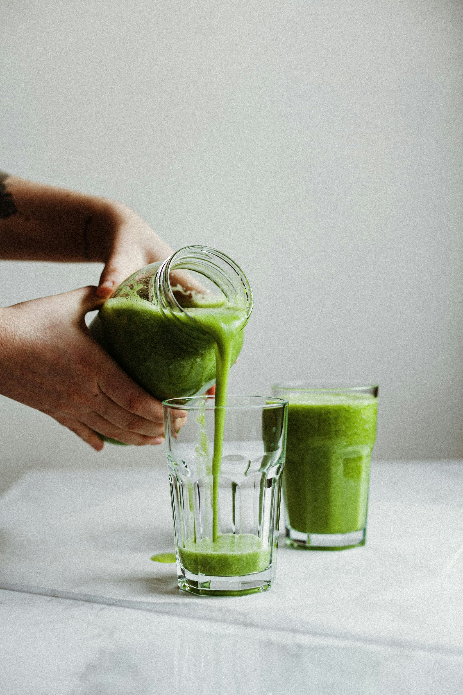
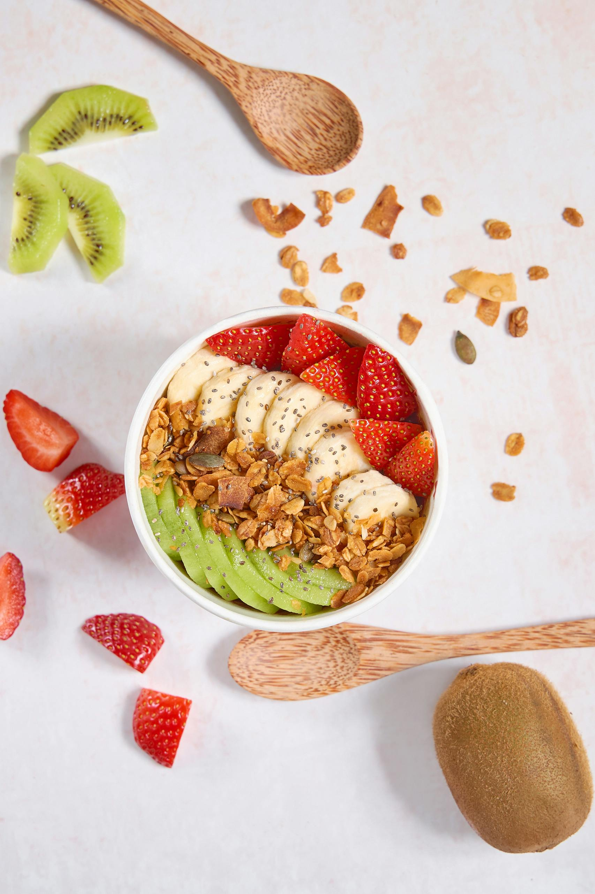
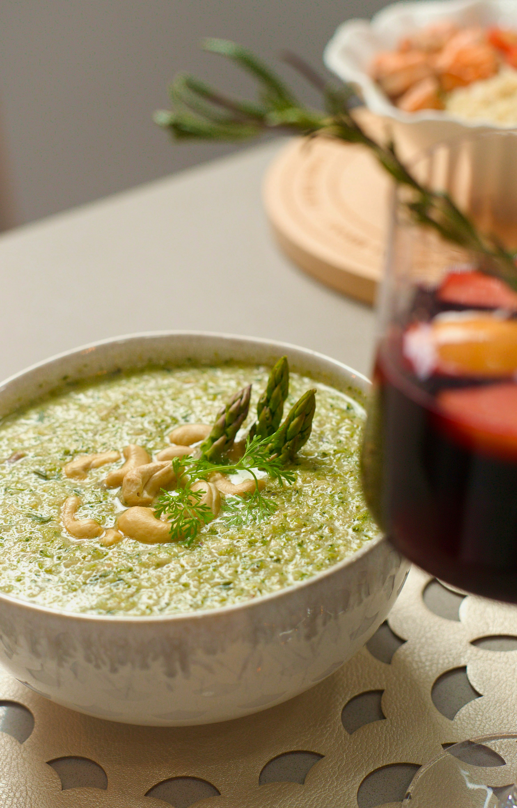
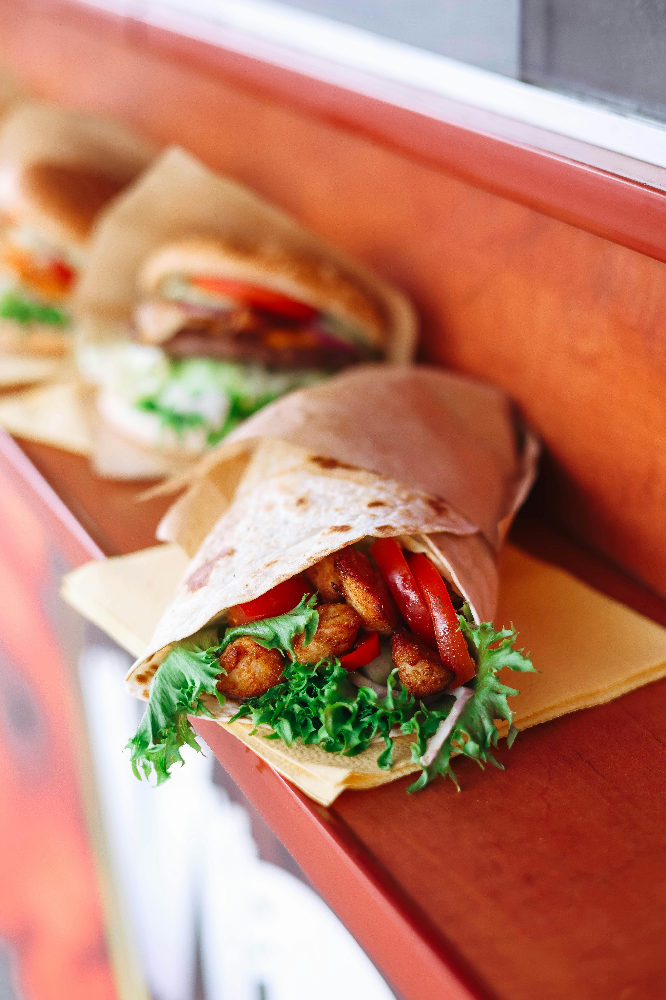
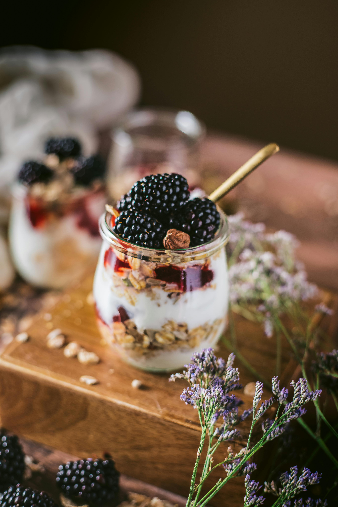

Effective Meal Planning
Meal planning is a proactive approach to managing your daily nutrition.
By taking the time to organize meals in advance, you can better control portion sizes,
nutritional balance, and even food costs. This practice not only simplifies your week but
also keeps you aligned with health and fitness goals. Meal planning reduces the stress of
daily food decisions, helps you avoid unhealthy last-minute choices, and makes sure you're
consistently eating well-balanced meals.
How to Start Meal Planning
-
Set Clear Goals:
Setting realistic, specific goals makes meal planning more manageable.
Start with just a few meals per week, like prepping lunches for work or
planning dinners to avoid last-minute takeout. Each meal should support your
overall health goals.
-
Balance Each Plate:
A balanced meal fuels your body and keeps you energized.
A great rule of thumb is to fill half your plate with vegetables, a quarter with lean protein,
and the last quarter with whole grains or healthy carbs. For example, try grilled chicken, quinoa,
and roasted vegetables for a satisfying and balanced plate.
-
Use Planning Tools:
Meal planning tools make the process smoother. Use a weekly planner, app, or
printable template to list your meals and ingredients. This will save you time at the store,
help you avoid unnecessary purchases, and keep you focused on healthy choices.
-
Monday
- Breakfast: Greek yogurt with mixed berries and honey
- Lunch: Grilled chicken salad with mixed greens, cherry tomatoes, and vinaigrette
- Dinner: Stir-fried vegetables with tofu and brown rice
-
Tuesday
- Breakfast: Overnight oats with almond milk, chia seeds, and sliced banana
- Lunch: Quinoa bowl with roasted veggies and chickpeas
- Dinner: Baked salmon with sweet potatoes and steamed asparagus
-
Wednesday
- Breakfast: Avocado toast on whole-grain bread with a boiled egg
- Lunch: Lentil soup with a side of mixed green salad
- Dinner: Turkey burger with a side of roasted Brussels sprouts
-
Thursday
- Breakfast: Smoothie with spinach, mango, almond milk, and protein powder
- Lunch: Whole-wheat wrap with hummus, cucumber, bell pepper, and turkey
- Dinner: Spaghetti squash with marinara sauce and grilled shrimp
-
Friday
- Breakfast: Chia pudding with almond milk, topped with fresh strawberries and almonds
- Lunch: Brown rice bowl with black beans, corn, avocado, and salsa
- Dinner: Grilled chicken with mashed cauliflower and steamed broccoli
-
Saturday
- Breakfast: Scrambled eggs with spinach and whole-grain toast
- Lunch: Tuna salad with mixed greens, cherry tomatoes, and cucumber
- Dinner: Vegetable stir-fry with tofu and soba noodles
-
Sunday
- Breakfast: Pancakes made with oats and topped with banana slices and a drizzle of honey
- Lunch: Chicken and vegetable soup with a side of mixed greens
- Dinner: Baked cod with quinoa and a side of roasted carrots
Developing Healthy Eating Habits
Daily eating habits have a profound impact on long-term wellness, energy levels,
and overall quality of life. Small, consistent actions can improve digestion, support immunity,
and help maintain a healthy weight. Adopting healthier habits doesn't require a complete lifestyle
overhaul—instead, it's about making small, sustainable changes that build up over time.
This section highlights simple, impactful habits to incorporate into daily routines for a
healthier diet and lifestyle.
Top 5 Habits for a Healthier Diet


-
Eat Mindfully:
Take the time to truly enjoy your meals. Slow down, chew each bite, and focus on the flavors.
Eating mindfully can make meals more satisfying and help prevent overeating.
-
Hydrate Throughout the Day:
Hydration is key to keeping energy levels up and supporting your body’s natural processes.
Make it a habit to carry a water bottle and sip throughout the day.
-
Opt for Whole Foods:
Whole foods nourish your body with essential nutrients and help maintain steady energy levels.
When shopping, focus on natural options like fruits, vegetables, and whole grains.
-
Limit Added Sugars:
Limit your intake of sugary snacks and beverages, as added sugars can lead to energy dips.
Instead, reach for fruits or naturally sweet foods for a healthier choice.
-
Prioritize Protein:
Protein is key to feeling full and supporting muscle health. Include a source of protein in every meal
to stay energized and satisfied.
Easy & Nutritious Recipes
A collection of balanced, easy-to-make recipes that align with meal planning and support a nutritious lifestyle.
Each recipe includes wholesome ingredients that are easy to find and adaptable to a variety of dietary preferences.
Whether you're looking for a quick breakfast or a hearty dinner, these recipes provide diverse options that are
both flavorful and nourishing, ideal for anyone seeking to build healthier eating habits.
Recipe 1: Avocado Smoothie

-
Ingredients:
- 1 ripe avocado
- 1 banana
- Handful of spinach
- 1 cup milk
-
Instructions:
- Cut avocado and banana into pieces.
- Add all ingredients into a blender and blend until smooth.
- Serve chilled.
Recipe 2: Overnight Oats

-
Ingredients:
- 1/2 cup rolled oats
- 1 tbsp chia seeds
- 1 cup almond or regular milk
- Fresh berries (strawberries, blueberries)
-
Instructions:
- In a mason jar or bowl, combine oats, chia seeds, and milk.
- Stir well, cover, and refrigerate overnight.
- In the morning, top with berries and honey.
Recipe 3: Chickpea & Vegetable Stir-Fry
-
Ingredients:
- 1 cup cooked chickpeas
- 1 bell pepper (any color), sliced
- 1 carrot, julienned
- 1/2 cup broccoli florets
- 1 tbsp olive oil
- 1 tsp soy sauce
- Salt and black pepper to taste
-
Instructions:
- Heat olive oil in a pan over medium heat.
- Add carrots, bell pepper, and broccoli; sauté for 5 minutes.
- Add chickpeas and soy sauce, cooking for another 5 minutes.
- Season with salt and pepper before serving.
Recipe 4: Lentil & Spinach Soup


-
Ingredients:
- 1 cup red lentils, rinsed
- 1 onion, finely chopped
- 2 garlic cloves, minced
- 1 tomato, chopped
- Handful of spinach leaves
- 1 tsp turmeric
- Salt and black pepper to taste
- 4 cups water
-
Instructions:
- In a pot, sauté onion and garlic until translucent.
- Add tomatoes and cook until soft.
- Add lentils, turmeric, water, salt, and pepper; bring to a boil.
- Reduce heat and simmer for 15-20 minutes, adding spinach toward the end.
Recipe 5: Chicken & Vegetable Wrap

-
Ingredients:
- 1 whole-wheat tortilla or roti
- 1/2 cup grilled chicken breast, shredded
- 1/4 cup shredded cabbage
- 1/4 cup grated carrot
- 1 tbsp plain yogurt
- Salt and black pepper to taste
-
Instructions:
- Place shredded chicken, cabbage, and carrot on the tortilla.
- Drizzle with yogurt and season with salt and pepper.
- Roll the wrap tightly and serve.
Recipe 6: Vegetable Omelette
-
Ingredients:
- 2 eggs
- 1/4 cup chopped bell peppers
- 1/4 cup chopped onion
- 1 small tomato, chopped
- Salt and black pepper to taste
- 1 tbsp olive oil
-
Instructions:
- Beat the eggs in a bowl and season with salt and pepper.
- Heat oil in a pan, add vegetables, and cook until soft.
- Pour in beaten eggs and cook until set.
- Fold and serve with whole-wheat toast.
Recipe 7: Fruit & Yogurt Parfait

-
Ingredients:
- 1 cup plain yogurt
- 1/2 cup mixed berries (strawberries, blueberries)
- 1/4 cup granola or nuts
- 1 tsp honey
-
Instructions:
- Layer yogurt, berries, and granola in a glass or bowl.
- Drizzle with honey and serve chilled.